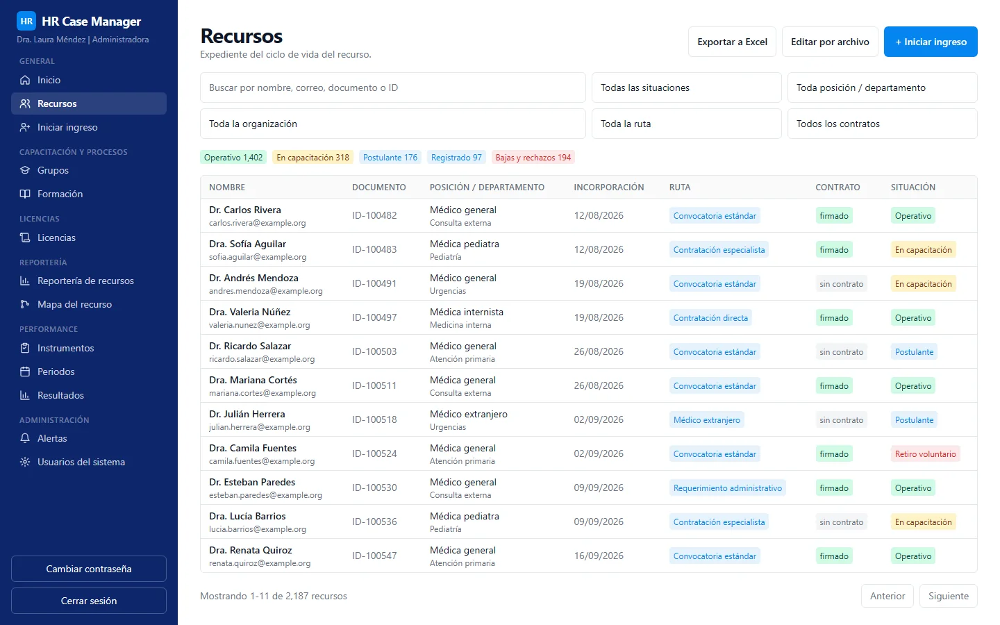
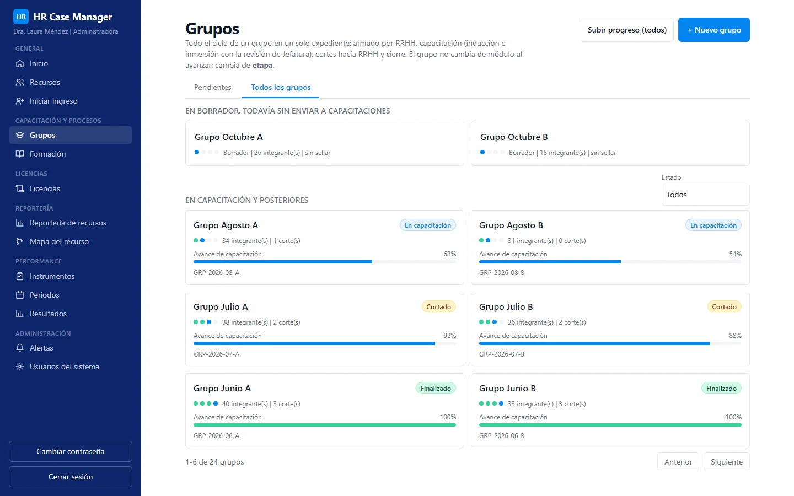
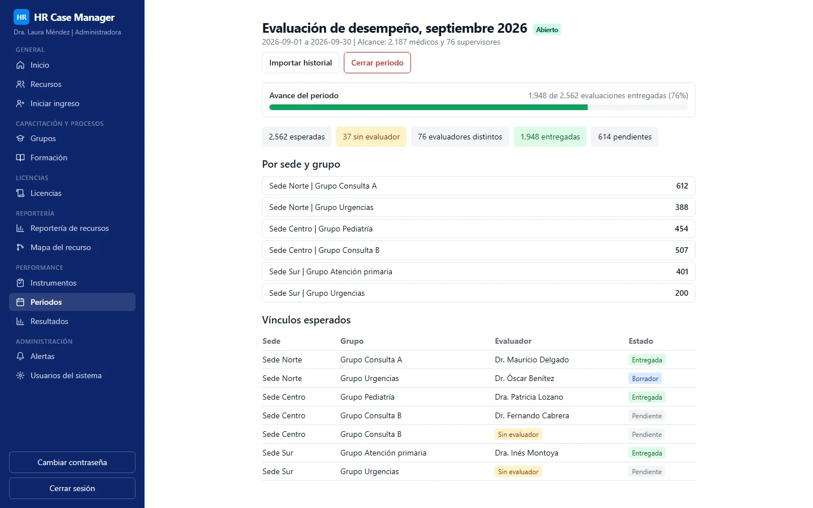

Gestión de casos de recursos humanos
Sistema web que administra todo el ciclo de vida de una fuerza laboral médica en un servicio nacional de telemedicina pública: rutas de contratación, incorporación y cohortes de capacitación, licencias, alertas y evaluaciones de desempeño, todo en un solo lugar y con acceso por roles.
- 2,562evaluaciones esperadas, a septiembre de 2026
- 2,187médicos dentro del alcance
- 76supervisores
Piloto con usuarios. Cifras reportadas en 2026. Ver las pantallas
Problema
La gestión de los médicos se repartía entre hojas de cálculo, formularios y correo electrónico. Cada área guardaba su propia copia de la verdad: el estado de contratación en un lugar, el avance de la capacitación en otro, las licencias en un tercero y las evaluaciones en un formulario en línea más una hoja de cálculo.
Las consecuencias eran criterios duplicados entre el formulario y la hoja, supervisores que escribían a mano a quién evaluaban, información que quedaba fuera de cualquier sistema y ninguna vista única de lo que se sabe de una persona ni de quién es responsable de actualizar cada dato.
Solución
Un monolito modular con fronteras claras entre las áreas de responsabilidad (ciclo de contratación, capacitación, licencias, accesos, notificaciones, auditoría, desempeño), de modo que las reglas de cada área vivan en un solo lugar y se comuniquen mediante eventos.
- Ciclo de contratación: varias rutas de contratación, cada una con sus propios pasos, con seguimiento por persona y un historial completo.
- Capacitación: cohortes con etapas, asistencia, actividades y calificaciones, con traspasos entre áreas y un documento de flujo generado que no puede desviarse del código (la documentación del flujo se genera a partir de las tablas de reglas y una prueba las compara).
- Licencias: solicitudes, adjuntos e historial.
- Alertas: un centro dentro de la aplicación más correo electrónico mediante una bandeja de salida, dirigido a un buzón central y al área responsable.
- Módulo de desempeño (última entrega): un mapa de todo lo que el sistema guarda sobre una persona y de qué área actualiza cada atributo, aplicado como permisos reales; instrumentos de evaluación configurables con versiones publicadas; períodos de evaluación; evaluador esperado derivado de la estructura de supervisión existente; captura con borradores y envíos congelados; resultados con visibilidad controlada por instrumento; e importación de los datos históricos de evaluación.
- Datos de identidad sensibles almacenados cifrados, con un índice ciego para la búsqueda; API y web servidas desde un único origen.
Impacto
Hay un piloto con usuarios en marcha. No se publica ninguna cifra de usuarios ni de uso para este proyecto.
Alcance de la última entrega, a septiembre de 2026: el módulo de evaluación de desempeño está diseñado para una fuerza laboral de 2,187 médicos y 76 supervisores, y cubre 2,562 evaluaciones esperadas. Un médico puede tener más de un vínculo; las evaluaciones son por vínculo y se agregan por persona.
Mi rol
- Requerimiento y dominio, aprendidos de los procedimientos escritos y de las áreas que los operan.
- Diseño de pantallas.
- Desarrollo con asistencia de IA, siguiendo propuestas escritas, seguimiento de tareas y registros de decisiones.
- Entrega y documentación: contenedores, configuración, migraciones y una guía de despliegue para el paso de infraestructura.
Stack
Versiones tomadas del archivo de bloqueo (lockfile) del proyecto:
- API: NestJS 10.4.22, TypeScript 5.9.3, Prisma 6.19.3, PostgreSQL 16 (imagen de contenedor
postgres:16-alpine); 73 migraciones de base de datos. - Web: React 18.3.1, React Router 7.15.1, Vite 5.4.21, Tailwind CSS 3.4.19, shadcn/ui.
- Herramientas: espacios de trabajo de pnpm (pnpm 11.4.0, Node 22 o superior), Biome 1.9.x para análisis estático y formato, Vitest 2.1.9, Playwright 1.60.0, commitlint y Husky.
- Infraestructura local: Docker Compose con PostgreSQL y un receptor de correo local; despliegue en Cloud Run automatizado con scripts en la carpeta de infraestructura.
Humano en el circuito en este proyecto
Las rutas de evidencia que aparecen abajo corresponden a repositorios privados y se muestran como texto plano.
- Decisiones de requerimiento tomadas con el responsable, fechadas y numeradas:
openspec/changes/performance/proposal.md(P1 a P10, 2026-09-27) ydocs/requerimientos/performance.md. - Seguimiento de tareas con evidencia por avance (R0 a R10) y notas de revisión registradas, incluido un defecto encontrado mientras toda la suite de pruebas estaba en verde:
odd/tasks/performance.md. - La compuerta local antes de dar algo por terminado (análisis estático, verificación de tipos, pruebas, compilación, verificación de arranque y verificación de la documentación generada) y la regla de que un commit depende del resultado de la compuerta:
docs/prompts/retomar-[project].md, secciones 1 a 4. - Decisiones de arquitectura fechadas y deuda técnica registrada:
ARCHITECTURE-DECISIONS.md,TECH-DEBT.md. - Documentación del flujo generada y comparada con el código mediante una prueba:
docs/flujo-grupo-capacitaciones.md. - Documento de retoma para una persona o una sesión nueva:
docs/prompts/retomar-[project].md.
Estado
Piloto con usuarios. El repositorio contiene los scripts y la guía de despliegue para un despliegue en la nube de un solo servicio; no se publican la población de usuarios ni el estado en producción.
Pantallas



La información de estas pantallas ha sido anonimizada.